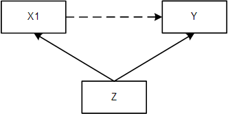

Multiple regression is a statistical technique that allows us to examine the relationship between one outcome and multiple predictors. It extends the concept of bivariate linear regression, where we model the relationship between two variables, to include more predictors. In the context of social science research, multiple regression helps us answer the question: What is the unique effect of one predictor, while controlling for the effects of all other predictors?
As a matter of fact, last week’s analyses for categorical variables with more than two categories were already an example of multiple regression. We included two dummy variables to represent a categorical variable with three categories. All that’s new today is that we also consider the case where the multiple predictors are continuous variables. An important realization is that a regression model can be expanded to include as many predictors as needed. The general formula for multiple regression is \(\hat{Y} = a + b_1X_1 + b_2X_2 + \ldots + b_KX_K\), where \(\hat{Y}\) represents the predicted value of the dependent variable Y, \(a\) is the intercept, and \(b_{1 \ldots K}\) are the slopes for each predictor.
When interpreting the regression coefficients, the intercept (a) represents the expected value of the dependent variable when all predictors are equal to 0. For dummy variables, this is the mean value of the reference category, while for continuous predictors, it represents the expected value for someone who scores 0 on all predictors. The regression coefficients (b1, b2, …, bK) indicate how many units the dependent variable Y is expected to change when the corresponding predictor X increases by 1 unit, while holding all other predictors constant.
Centering predictors can be useful in multiple regression. By centering, we shift the zero-point of the predictor to a meaningful value, such as the mean value on that predictor. This helps in interpretation, because the intercept now gives us the mean value on the outcome for someone who has an average score on all predictors.
As previously explained, standardized regression coefficients drop the units of the predictor and outcome variable. They are calculated by transforming the predictors and outcome variable into z-scores with a mean of 0 and a standard deviation of 1, and performing the (multiple) regression analysis on those z-scores. Because the units of the variables are dropped, standardized coefficients make the effects of predictors comparable across different studies or variables with different measurement units. They represent the change in the dependent variable in terms of standard deviations when the corresponding predictor increases by 1 standard deviation.
12.2 Causality
A statistical association between variables does not necessarily imply a causal relationship. Instead, causality is either assumed on theoretical grounds, or established using the experimental method. In an experiment, researchers manipulate an independent variable and observe its effects on the dependent variable. However, in many social science studies, experiments are not feasible or ethical, so researchers rely on observational data. In these cases, establishing causal relationships relies on theory and careful statistical analysis.
One important concept in causal inference is the direction of effects. While statistical methods can identify associations between variables, determining the direction of causality is a causal assumption that cannot be estimated using statistics alone. The assumed direction of effects is often based on theory and prior knowledge of the subject matter. Researchers make informed assumptions about which variable is likely to have a causal effect on the other based on theoretical reasoning and empirical evidence.
In the process of analyzing causal relationships, it is essential to consider the presence of confounders, mediators, and colliders. Confounders are variables that are associated with both the independent and dependent variables and can create a spurious association or distort the true causal relationship. Identifying and controlling for confounders is crucial to ensure accurate causal inference.
Mediators, on the other hand, are variables that explain the relationship between the independent and dependent variables. They act as intermediate steps or process variables in the causal pathway. Understanding and analyzing mediation effects help us understand the underlying mechanisms through which the independent variable affects the dependent variable.
Colliders are variables that are caused by both the independent and dependent variables. Controlling for colliders can lead to spurious statistical relationships between unrelated variables. It is essential to be cautious when including variables in the analysis and consider the causal structure of the variables involved.
One important take-home message is that, in multiple regression, the distinction between confounders and colliders is crucial. Including confounders as control variables in multiple regression improves our inferences - but accidentally including a collider as control variable (severely) biases our inferences. You therefore have to carefully reason about each variable’s role in relation to the other variables in the model.
13 Lectures
14 Formative Test
A formative test helps you assess your progress in the course, and helps you address any blind spots in your understanding of the material. If you get a question wrong, you will receive a hint on how to improve your understanding of the material.
Complete the formative test ideally after you’ve seen the lecture, but before the lecture meeting in which we can discuss any topics that need more attention
Question 1
What is the primary advantage of using multiple regression analysis?
Question 2
What is the purpose of centering in multiple regression analysis?
Question 3
What does the intercept (a) in a multiple regression model represent?
Question 4
What do the b-coefficients in a multiple regression model represent?
Question 5
When is multicollinearity a concern in multiple regression analysis?
Question 6
What is the role of standardized regression coefficients in multiple regression analysis?
Question 7
What is the potential bias introduced when controlling for a collider in multiple regression analysis?
Question 8
Given the multiple regression equation: Y = 12.5 + 2.3X1 + 1.8X2 - 0.5*X3, calculate the predicted value of Y when X1 = 5, X2 = 3, and X3 = 2.
Question 9
In a multiple regression model, if the coefficient of determination (R²) is 0.75 and the SSE is 150, what is the value of SST?
Question 10
Given the following standardized regression equation: Y = 0.6 + 0.35X1 + 0.25X2 - 0.15*X3, what is the correct conclusion about the effect of X2?
Question 1
Multiple regression analysis helps to understand the unique effect of each predictor while controlling for the effects of other predictors.
Question 2
Centering is used in multiple regression analysis to choose a meaningful zero-point for predictors.
Question 3
The intercept (a) in a multiple regression model represents the expected value when all predictors are equal to 0.
Question 4
The b-coefficients in a multiple regression model represent the change in the dependent variable for a one-unit change in the predictor while other predictors are held constant.
Question 5
Multicollinearity is a concern in multiple regression analysis when predictor variables are highly correlated with each other.
Question 6
Standardized regression coefficients are used to compare the effect sizes of predictors on a common scale, especially when the units of predictors are not meaningful.
Question 7
Controlling for a collider in multiple regression analysis can introduce bias in the estimated association between the variables that form the collider.
Question 8
Plug in the values of X1, X2, and X3 into the regression equation: Y = 12.5 + 2.35 + 1.83 - 0.5*2 = 28.4.
Question 9
Use the formula R2 = 1-(SSE/SST) or R2 = SSR/SST
Question 10
The correct interpretation is in the original units of the variables, and emphasizing the fact that other predictors were controlled for.
15 In SPSS
15.1 Multiple Regression
16 Tutorial
16.1 Multiple Regression
Social science students were asked about their opinion towards Tilburg’s nightlife, number of Facebook friends, and some other characteristics. The data are in the SocScSurvey.sav file.
In a previous assignment we predicted Facebook friends by extraversion.
In this question we will add another predictor, peer pressure.
The variable peer pressure refers to the tendency to be influenced by close friends. Higher scores reflect higher sensitivity to peer pressure.
Before we proceed with the regression analysis, we will first look at the correlations between the variables.
Analyze > correlate > bivariate.
Now choose as variables: Facebook Friends, Extraversion and Peer Pressure, and click OK.
What is the correlation between peer pressure and number of Facebook friends?
Suppose three researchers test the significance of the correlation between peer pressure and Facebook friends. Researcher I tests at the 10% level, researcher II tests at the 5% level, and researcher III at the 1% level.
Which researcher will reject the null hypothesis?
Now, run the regression analysis in which the number of Facebook friends is regressed on extraversion and peer pressure.
Proceed as follows: via analyze > regression > linear. Choose Facebook friends as dependent and extraversion and peer pressure as independents.
Consult the output and write down the regression equation.
Consider the second person in the sample. The person had an extraversion score of 11 and a score of 9 on peer pressure.
What is the predicted number of Facebook friends for this person?
Consult the output.
Researchers conclude that – in the sample – as peer pressure increases with one unit, the predicted number of Facebook friends increases with 12.056 units.
Is this a valid conclusion?
In multiple regression, the regression coefficients show us the expected changes in the dependent variable, while keeping the other independent variables constant.
With this in mind, what is the correct conclusion?
Consult the table Coefficients. The table shows the results of t-tests.
What are the null hypotheses and alternative hypotheses that are tested here?
The t-tests test significance of the individual regression coefficients. In particular, for each coefficient we can use the t-tests to test the following hypotheses:
\(H_0: \beta = 0\), \(H_1: \beta \ne 0\)
What is the value of the test-statistic for the significance test for extraversion?
Consider the t-tests for the regression coefficients again.
How many degrees of freedom do the t-tests have?
Note that:
Degrees of freedom = N - p N = number of participants; p = number of parameters in the model (intercept + two regression slopes)
Suppose three researchers test the significance of peer pressure as a predictor of Facebook friends, while controlling for extraversion. Researcher I tests at the 10% level, researcher II tests at the 5% level, and researcher III at the 1% level.
Which researcher(s) will reject the null hypothesis?
What percentage of the total variance in Facebook friends can be explained by both extraversion and peer pressure?
Compare the \(R^2\) of the regression model with both predictors with the \(R^2\) of a model with only extraversion as the predictor.
What is the difference?
In the previous step we compared the \(R^2\) of two so called nested models.
Two models are nested if the larger model (i.e., the model with the most predictors) contains all predictors of the smaller model.
In the next lecture we will learn more about nested models, model comparisons, and how useful they are for researchers!
16.2 Multiple Regression II
For this assignment we need the file HealthyFood.sav.
This file contains hypothetical data on three variables:
Eating healthy food (the higher the score, the healthier a person’s diet) Knowledge about food (the higher the score, the more a person knows about healthy food and risks of unhealthy food) Income (higher scores = more income).
Let’s first look at the associations (correlations) between the three variables.
Compute the correlations and summarize the relationships between all pairs of variables. Include in your answer the strength of the relationship (i.e., weak, moderate, or strong), the direction of the relationship (i.e., positive or negative), and generalizability to the population (i.e., is the correlation significant at the 5% level).
Cohen’s rules of thumb:
r = 0.00-0.30 (none to weak)
r = 0.30-0.50 (weak to moderate)
r = 0.50-0.70 (moderate to strong)
r = 0.70-0.90 (strong to very strong)
r = 0.90-1.00 (very strong)
Income and eating have a weak positive correlation, which is significant at the 5% level.
Income and knowledge have a weak to moderate positive correlation, which is significant at the 5% level.
Knowledge and eating have a moderate to strong positive correlation, which is significant at the 5% level.
Researchers may be interested in explaining differences in eating healthy food: in other words, they want to know why some people eat very healthy, while others tend to eat unhealthy.
One of the hypotheses is that healthy food is on average more expensive than unhealthy food, so one of the explanatory variables may be income.
Run a regression analysis using eating as the dependent variable and income as the independent variable.
Consult the output.
Which of the following conclusions is correct?
Simple regression analysis suggests a positive relationship between income and healthy food.
However, other researchers (say Team B) came up with an alternative explanation. They hypothesized that the relationship between income and healthy food can be explained by a confounder; knowledge. People with more knowledge will have better jobs (on average), and, as a result more, income. As the result of their knowledge they also prefer to eat healthy food. I.e., Team B thinks knowledge is a common cause of income and eating healthy food.
In other words, the researchers of Team B hypothesize that the relationship between income and eating healthy food is
Draw (on a piece of paper) the conceptual model that reflects the hypotheses of the researchers.

Now let’s see if the data support the hypotheses of the researchers.
Run a multiple regression analysis using eating healthy food as the dependent variable and income and knowledge as independent variables.
Consult the output. Look at the effect of income, controlled for knowledge (both the coefficient and the significance test).
What happened with the effect of income if you control for knowledge?
Does knowledge predict eating healthy food (controlled for income)?
Do the data support the hypothesis that the relationship between income and healthy food is confounded by knowledge?
What is the p-value of Income when you control for Knowledge?
What is the p-value of Knowledge, controlling for Income?
Do the data support the hypothesis that the relationship between income and healthy food is confounded by knowledge?
Finally, interpret the output. Write down the answers to the following questions:
How well can we predict the variance in healthy eating with the predictors income and knowledge? Interpret R2, report the appropriate test and its significance
Interpret the regression coefficients (size, direction, significance)
Which predictor is the most important predictor of healthy eating behavior? Inspect the standardized regression coefficients
Income and Knowledge together predict 44.9% of the variance in Eating healthy food, which is significantly different from zero, \(R^2 = .45, F(2, 347) = 141.179, p <.001\).
Controlling for Knowledge, Income has a positive, but non-significant effect on Eating healthy food, t(347) = .283, p = .778.
Controlling for Income, Knowledge has a positive, significant effect on Eating healthy food, t(347) = 15.287, p <.001.
Knowledge is the most important predictor (\(\beta\) = .665) (compare it with \(\beta\) = .012 of Income).